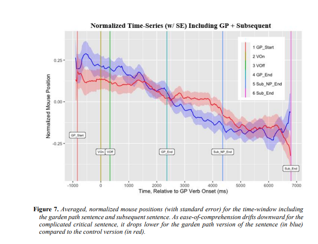
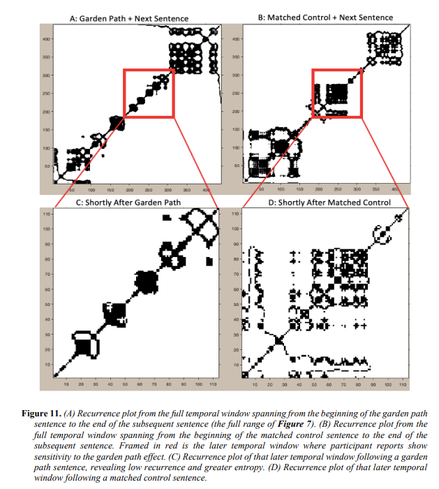

Temporary disruption in language processing reflected as multiscale temporal discoordination in a recurrent network
This project sought to test a new way to use mouse-tracking for studying language comprehension: a continuous real-time report (idiodynamic measure).
Moreover, this experiment uniquely used a continuous narrative (~17 minutes) yielding dense mouse-tracking trajectory data. This density enabled analysis of the trajectories' temporal unfolding.
We were able to capture a difference in comprehension reports, temporally aligned to the end of the sentence manipulation. This is expected as there is a lag to perceiving, recognizing, and physically reporting one's cognitive lapses.
We also showed a difference in the report recurrence (recurrence quantification analysis) during this key window. This recurrence reflects when the mouse returns to similar positions/pathing. There was less recurrence (in other words, more entropy) in those experiencing a loss of comprehension. This entropy in mouse-tracking trajectory, we argue, is reflective of cognitive load. To construct this argument, we compared these results to activity in recurrent networks.
In sum, we validated this idiodynamic measure of language comprehension and demonstrated ways to handle and analyze the resultant data. Moreover, we prove the feasibility and utility of more naturalistic stimuli, such as the long-form narrative used here.
Temporal Alignment of (Averaged) Participant Comprehension Report Across Conditions.

Recurrence Quantification Analysis of Mouse Trajectory Across Conditions.

Participants
Fourty-six participants were recruited from the University of California, Merced and compensated with course-credit.
Rating Box
Participants were presented with this screen and rating box, and asked to fixate on the cross while moving their mouse in the box to reflect their comprehension/understanding level.
Materials
A 17-minute long continous narrative was constructed uniquely for this experiment. For each individual, at five key sentences, a garden-path sentence anomaly was introduced. In analysis, we compared the reports to these anomalies against participants who experienced the control, unmanipulated version of that same sentence, hence, a total of 10 key sentences. The narrative was read using text-to-speech software, Balboa, and editted to be garden-paths using Audacity.